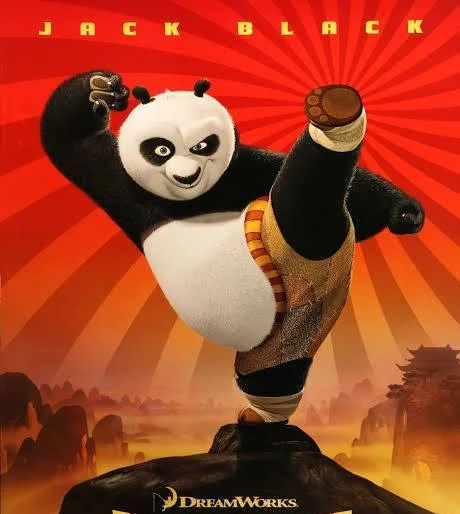

Kung Fu Panda is an American martial arts comedy media franchise that started in 2008 with the release of the animated film Kung Fu Panda produced by DreamWorks Animation. Following the adventures of the titular Po Ping (primarily voiced by Jack Black and Mick Wingert), a giant panda who is improbably chosen as the prophesied Dragon Warrior and becomes a master of kung fu, the franchise is set in a fantasy wuxia genre version of ancient China populated by anthropomorphic animals. Although everyone initially doubts him, including Po himself, he proves himself worthy as he strives to fulfill his destiny.
This is a Movie